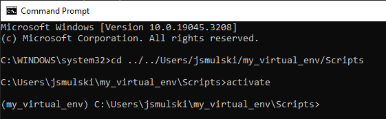
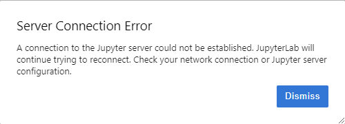

JupyterLab & Anaconda#
Instalowanie i aktualizowanie pakietów Python (pip, conda)#
W tej części zostaną przedstawione dwa systemy do zarządzania pakietami dla środowsika Python tj. pip oraz conda.
System zarządzania pip jest domyślnym menadżerem pakietów dostępnym dla języka Python. Korzysta z dedykowanego repozytorium pakietów Python Package Index w skrócie PyPi.
Z drugiej strony conda oprócz zarządzania pakietami zajmuję się również zarządzaniem środowiskami wirtualnymi. Dzięki systemowi zarządzania conda jesteśmy w stanie budować wyizolowowane środowiska wirtualne z odpowiednią wersją Python oraz interesującymi nas pakietami. Conda instaluje pakiety z repozytorium Anaconda repository, a także z Anaconda Cloud. Plusem conda jest możliwość wykorzystania tego mendażera nie tylko do Python, ale również m.in. do R czy C++.
Podstawowe polecenia dla pip oraz conda#
Tworzenie środowiska wirtualnego#
Python Virtual Environment (venv) jest środowiskiem Pythona, które jest odseparowane i całkowicie niezależne od głównej instalacji Pythona. Każdy tworzony przez nas projekt może, a nawet powinien, zawierać swoje środowisko, dzięki czemu może składać się z unikalnego zestawu pakietów.
Venv jest nowym katalogiem na dysku, w którym znajduje się kopia Pythona. Zaraz po utworzeniu zawiera ona jedynie podstawowe pakiety. Zupełnie tak, jakbyśmy zainstalowali Pythona sami w nowej lokalizacji.
Z wykorzystaniem command line#
python -m venv /path/to/new/virtual/environment
W condzie:
conda create --name <env_name>
Z wykorzystaniem pliku requirements.txt#
W tym przypadku nie do końca mówimy o instaltacji środowiska, ale raczej o instalacji pakietów z wykorzsytanien pliku tektsowego. Możemy w pliku zdefiniować całą listę pakietów wraz z ich wersajmi, a następnie przy pomocy poniższej komendy zainstalować je wszystkie. Należy pamiętać, aby w tym przypadku w pierwszej kolejności utworzyć środowisko wirtualne z command line.
pip install -r requirements.txt
Z wykorzystaniem pliku environment.yml#
Przykładowy plik environment.yml:
name: <env_name>
channels:
- defaults
dependencies:
- python=3.9
- pandas=1.5.3
- pip=23.1.2
- pip:
- numpy==1.23.5
W tym przypadku tworzymy środowisko wraz z nazwą, odpowiednią wersją python oraz wszystkimi wymienionymi pakietami w zdefiniowanych wersjach.
conda env create -f environment.yml
Aktywacja środowiska#
Aktywacja środowiska conda#
conda activate <env_name>
Po właściwej aktywacji środowiska w wierszu poleceń pokazane jest, które środowisko jest aktywne:
W przypadku nieudanej aktywacji (np. będziemy próbować aktywować środowisko, którego nie ma) dostaniemy błąd:
Aktywacja środowiska venv#
cd <path_to_virtual_env>/Scripts
activate
Po właściwej aktywacji środowiska będzie ono widoczne:

Deaktywacja środowiska#
conda#
conda deactivate
venv#
deactivate
Wylistowanie wszystkich dostępnych środowisk w condzie#
conda env list
Warto zauważyć, że aktywne środowisko jest oznaczone “*”
Usuwanie środowiska conda#
conda env remove --name <env_name>
Możemy usunąć środowisko tylko wtedy, gdy nie jest ono aktywne. W innym wypadku dostaniemy błąd:
Instalowanie bibliotek#
pip install <package_name1> <package_name2> ... <package_nameN>
conda install <package_name1> <package_name2> ... <package_nameN>
Odinstalowanie bibliotek#
pip uninstall <package_name1> <package_name2> ... <package_nameN>
conda remove <package_name1> <package_name2> ... <package_nameN>
Export środowiska wirtualnego do pliku environment.yaml#
conda env export > environment.yml
Export listy pakietów do pliku requirements.txt#
pip freeze > requirements.txt
Przydatne informacje#
Cheatsheet: https://docs.conda.io/projects/conda/en/latest/user-guide/cheatsheet.html
Różnice pomiędzy pip oraz conda: https://www.anaconda.com/blog/understanding-conda-and-pip
Zadanie 1#
Utwórz środowisko wirtualne o nazwie env_szkolenie_python z wersją Python 3.10 z następującymi bibliotekami:
pandas
numpy
scipy
statsmodels
matplotlib
seaborn
Środowisko wirtualne utwórz z wiersza poleceń korzystając z polecenia conda. Po utworzeniu środowiska zapisz artefakt w formie pliku requirements.txt oraz environment.yaml. Skorzystaj do tego z poleceń opartych o pip oraz conda.
Zadanie 2#
Na podstawie eksportowanego środowiska w poprzednim zadaniu utwórz nowe środowisko wirtualne tym razem o nazwie env_szkolenie_python_pip i env_szkolenie_python_conda. Do tego wykorzystaj plik requirements.txt oraz envrionment.yaml.
JupyterLab / Jupyter Notebook#
Jupyter Notebook służy do wykonywania interaktywnych obliczeń. Zawiera w sobie obliczenia, wyniki, tekst objaśniający, obrazy, bogate reprezentacje multimedialne obiektów, itd.
JupyterLab to internetowy interfejs. Umożliwia on pracę z dokumentami i działaniami takimi jak Jupyter Notebook, edotyory tekstu, wiersze poleceń, itp.
Uruchomienie JupyterLab / Jupyter Notebook#
Z poziomu wiersza poleceń:#
Instalacja pakietu
conda install jupyter
Włączenie JupyterLab (dla notebooka analogicznie)
jupyter-lab
Po wpisaniu komendy w przeglądarce JupyterLab chodzi na lokalnym hoście
Nie należy wyłączać wiersza poleceń. W innym wypadku stracimy połączenie z JupyterLab:

Z poziomu Anaconda Navigator#
Uruchamiamy Anaconda Navigator
Upewniamy się, że mamy wybrane dobre środowisko:
Instalujemy bibliotekę jupyter (o ile nie zrobiliśmy tego wcześniej). Jeśli juptyer nie jest zainstalowany to można to zrobić jednym kliknięciem w menu głównym:
Włączamy JupyterLab / Jupyter Notebook:

I tym razem JupyterLab również jest włączony na lokalnym hoście
Obsługa Jupter#
Kernel#
Kernele to procesy specyficzne dla języka programowania, które działają niezależnie i wchodzą w interakcje z aplikacjami Jupyter i ich interfejsami użytkownika. ipykernel to referencyjny kernel Jupyter zbudowany na bazie IPython, zapewniający środowisko do interaktywnych obliczeń w Pythonie. Kernel to podstawowy komponent, który odgrywa kluczową rolę w wykonywaniu kodu i zarządzaniem środowiskiem obliczeniowym.
Ręczne zatrzymanie pracy środowiska#
Zdarzyć się może, że nasz kod będzie wykonywać się długo, albo znajdziemy w nim błąd w trakcie jego wykonywania. Na przykład tworząc nieskończoną pętlę:
while True:
pass
Wtedy możemy zatrzymać jego wykonywanie, zastopować kernel. Wystarczy wybrać opcję “interrupt the kernel” z górnego panelu:
Wówczas w wyniku komórki, która się wykonywała dostaniemy odpowiedni błąd:
Automatyczne zatrzymanie pracy środowiska#
Czasem bywa tak, że kernel zatrzymuje się automatycznie. Może mieć to związek ze skończeniem się zasobów maszyny, na której pracujemy.
Dodanie kernela środowiska wirtualnego do JupyterLab#
Odpalamy wiersz poleceń
Aktywujemy nasze wirtualne środowisko (poniżej pokazane dla Windows)
cd <path_to_virtual_env>/Scripts
activate
W razie potrzeby instalujemy jupyter (jeżeli jupyter jest zainstalowany to patrz punkt 5)
pip pinstall jupyter
Jeżeli nie mamy pip wtedy uruchamiamy dwie komendy:
curl https://bootstrap.pypa.io/get-pip.py -o get-pip.py
python get-pip.py
Uruchamiamy komendę (nazwa “local-venv” dowolna):
ipython kernel install --name "local-venv" --user
Wówczas po uruchomieniu JupyterLaba/Notebooka mamy do wyboru nowy kernel:
Skróty klawiszowe#
Enter - Przejście do trybu edycji komórki
Control + Enter - Uruchomienie linijki kodu
Shift + Enter - Uruchomienie linijki kodu i przejście do następnej komórki
Escape - Przejście do trybu komend
a - Wstawienie nowego wiersz powyżej (above)
b - Wstawienie nowego wiesza poniżej (below)
dd - Usunięcie bieżącego wiesza (delete)
m - Zmiana typu komórki na komentarz (markdown)
y - Zmiana typu komórki na kod (code)
x - Wytnij komórkę (cut)
c - Skopiuj komórkę (copy)
v - Wstaw wyciętą/skopiowaną komórkę (paste)
Shift + m - Połączenie dwóch komórek (merge)
Control + Shift + – - Rozdzielenie dwóch komórek (split)
Control + s - Zapisz notebook (save)
o - Pokaż/ukryj output (output)
l - Polaż/ukryj numery linijek (line number)
Shift + L - Pokaż/ukryj numery linijek w całym notebooku
Control + Shift + f - Wyszukiwanie komend
h - Pomoc dot. skrótów klawiaturowych (help)
Praca z Jupyter Notebook#
W notatniku mamy do wyboru kilka opcji:
pisanie kodu
pisanie Markdown
pisanie surowego tekstu
Pisanie Markdown#
Nagłówki#
# Nagłówek główny
## H2
### H3
#### H4
##### H5
###### H6
Rezultat:
Nagłówek główny#
H2#
H3#
H4#
H5#
H6#
Pogrubienie, kursywa#
*kursywa*
**pogrubienie**
Rezultat:
kursywa
pogrubienie
Markdown wspiera też HTMLa#
<u>podkreślenie</u>
nowa linia -> <br />
<b>pogrubienie</b>
<span style="color:red"> kolorowanie </span>
odnośnik<sup>2</sup>
<font size = "5"> Zmiana rozmiaru czcionki
<p style='margin-bottom:1em; margin-right:1em; text-align:right; font-family:Georgia'> Zmiana stylu i przesunięcie tekstu</p>
Rezultat:
podkreślenie
nowa linia ->
pogrubienie
kolorowanie
odnośnik2
Zmiana rozmiaru czcionki
Zmiana stylu i przesunięcie tekstu
Listy#
- Element 1
- Element 2
- Element 2.1
- Element 2.2
- Element 2.2.1
1. Element 1
2. Element 2
- Element 2.1
- Element 2.2
- Element 2.2.1
Rezultat:
Element 1
Element 2
Element 2.1
Element 2.2
Element 2.2.1
Element 1
Element 2
Element 2.1
Element 2.2
Element 2.2.1
Tabele#
1st Header|2nd Header|3rd Header
---|:---:|---:
col 1 is|left-aligned|1
col 2 is|center-aligned|2
col 3 is|right-aligned|3
Rezultat:
1st Header |
2nd Header |
3rd Header |
|---|---|---|
col 1 is |
left-aligned |
1 |
col 2 is |
center-aligned |
2 |
col 3 is |
right-aligned |
3 |
Pisanie kodu#
` ``py
def fun(x):
return x**2
` ``
Rezultat:
def fun(x):
return x**2
Wklejanie obrazków#
Nie ma też przeszkód, żeby wklejać screeny 😜

Rezultat:

Alert boxy#
<div class="alert alert-block alert-info"> <b>Info!</b> To pole wskazuje neutralną informację lub działanie. </div>
<div class="alert alert-block alert-success"> <b>Success!</b> To pole wskazuje pozytywne działanie. </div>
<div class="alert alert-block alert-warning"> <b>Warning!</b> To pole alertu wskazuje ostrzeżenie, które może wymagać uwagi. </div>
<div class="alert alert-block alert-danger"> <b>Danger!</b> To pole wskazuje na niebezpieczne lub potencjalnie negatywne działanie. </div>
Rezultat:
Okno można stworzyć też samemu:
<div class="warning" style='background-color:#fbff19; color:#000000; border: dashed #b3b536 4px; border-radius: 4px; padding:0.7em;'>
<span>
<p style='margin-top:1em; text-align:center'>
<b>BARDZO WAŻNY KOMUNIKAT</b></p>
<p style='margin-left:1em;'>
Okno stworzone przy użyciu konstrukcji HTML
</p>
<p style='margin-bottom:1em; margin-right:1em; text-align:right; font-family:Georgia'> <i>(można też modyfikować pojedyncze zdania)</i>
</p></span>
</div>
Rezultat:
BARDZO WAŻNY KOMUNIKAT
Okno stworzone przy użyciu konstrukcji HTML
(można też modyfikować pojedyncze zdania)
LaTeX#
Wyrażenia matematyczne: $x=2+x^2$
Wyrażenie wyśrodkowane:
$$
x=2+x^2
$$
Rezultat:
Wyrażenia matematyczne: \(x=2+x^2\)
Wyrażenie wyśrodkowane: $\( x_{n+1}=2+x_{n}^{2} \\ x_{0} = 0 \)$
Przydatne informacje#
Markdown cheatsheet: https://www.ibm.com/docs/en/watson-studio-local/1.2.3?topic=notebooks-markdown-jupyter-cheatsheet
Artykuł z przydatną, podstawową wiedzą: https://ashki23.github.io/markdown-latex.html
Wikipedia Latex: link
Polecenia magiczne#
time#
%time
Mierzy czas wykonywania pojedynczej instrukcji
%%time
Mierzy całkowity czas wykonywania kodu
%%time
import random
for i in range(0, 1000000):
random.random()
CPU times: total: 62.5 ms
Wall time: 66.2 ms
%time
import random
for i in range(0, 1000000):
random.random()
CPU times: total: 0 ns
Wall time: 0 ns
who / whos#
Wyświetla informacje o zmiennych aktualnie znajdujących się w przestrzeni nazw.
var_1 = 1
var_2 = 'hello'
var_3 = 100
%who
i random var_1 var_2 var_3
%who str
var_2
%whos
Variable Type Data/Info
------------------------------
i int 999999
random module <module 'random' from 'C:<...>\\jbook\\Lib\\random.py'>
var_1 int 1
var_2 str hello
var_3 int 100
pinfo#
Funkcja
%pinfo
w notatnikach Jupyter służy do dostarczania informacji i dokumentacji na temat określonego obiektu, funkcji lub modułu Pythona. Jest to przydatne narzędzie do szybkiego wyszukiwania informacji bez konieczności opuszczania notatnika.
%pinfo var_3
%pinfo len
env#
Pobiera, ustawia lub wyświetla listę zmiennych środowiskowych.
%env WD=Users/user/Forecast/AML
env: WD=Users/user/Forecast/AML
import os
os.environ['WD']
'Users/user/Forecast/AML'
# %env listuje zmienne środowiskowe
run#
uruchamia zewnętrzny skrypt pythonowy. Np.
%run script.py
uruchomi skrypt script.py znajdujący się w akutalnym katalogu
# run script.py
Plik script.py
Wywołujemy
%run script.py
Dostajemy
lsmagic#
Lista aktualnie dostępnych funkcji magicznych.
%lsmagic
Available line magics:
%alias %alias_magic %autoawait %autocall %automagic %autosave %bookmark %cd %clear %cls %code_wrap %colors %conda %config %connect_info %copy %ddir %debug %dhist %dirs %doctest_mode %echo %ed %edit %env %gui %hist %history %killbgscripts %ldir %less %load %load_ext %loadpy %logoff %logon %logstart %logstate %logstop %ls %lsmagic %macro %magic %mamba %matplotlib %micromamba %mkdir %more %notebook %page %pastebin %pdb %pdef %pdoc %pfile %pinfo %pinfo2 %pip %popd %pprint %precision %prun %psearch %psource %pushd %pwd %pycat %pylab %qtconsole %quickref %recall %rehashx %reload_ext %ren %rep %rerun %reset %reset_selective %rmdir %run %save %sc %set_env %store %sx %system %tb %time %timeit %unalias %unload_ext %who %who_ls %whos %xdel %xmode
Available cell magics:
%%! %%HTML %%SVG %%bash %%capture %%cmd %%code_wrap %%debug %%file %%html %%javascript %%js %%latex %%markdown %%perl %%prun %%pypy %%python %%python2 %%python3 %%ruby %%script %%sh %%svg %%sx %%system %%time %%timeit %%writefile
Automagic is ON, % prefix IS NOT needed for line magics.
load#
Ładuje zawartość zewnętrznego skryptu do komórki.
%load script.py
Plik script.py
Wywołujemy
%load script.py
Dostajemy
Przydatne informacje#
Lista wbudowanych funkcji magic https://ipython.readthedocs.io/en/stable/interactive/magics.html
Zadanie 3#
Napisz instrukcje “Jak utworzyć środowisko wirtualne env_szkolenie_python ?” korzystając z RMarkdown w Jupyter Lab. W instrukcji powinno się znaleźć:
tabelka z podanymi podstawowymi bibliotekami oraz ich wersjami do instalacji
komendy, które należy wykonać aby zainstalować środowisko z wiersza poleceń
należy zmienić kolor czcionki w niektórych miejscach instrukcji
dodać do opisu elementy typu: “Uwaga!”, “Wskazówka”